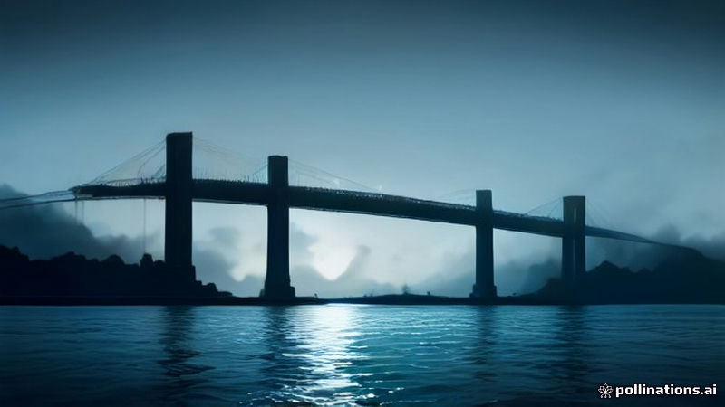

ইউক্রেনের কেরচ সেতু আক্রমণ, রাশিয়া-ইউরোপের উত্তেজনা বাড়ছে
Al Jazeera English · 2026-11-20
AI-generated illustrationইউক্রেন নিজস্ব অস্ত্র ও যোগাযোগ প্রযুক্তি ব্যবহার করে কেরচ সেতুতে আঘাত হানেছে, যখন পুতিনের মিত্র ইউরোপের প্রয়োজনীয়তা প্রশ্নবিদ্ধ করেছেন।
আল জাজিরা ইংলিশের মতে, ইউক্রেনীয় বাহিনী রাশিয়ার মূল ভূখণ্ড ও ক্রিমিয়াকে সংযুক্ত করা কেরচ সেতুতে আক্রমণ চালায়। আক্রমণটি দেশীয়ভাবে উৎপাদিত অস্ত্র ও যোগাযোগ সরঞ্জাম ব্যবহার করে করা হয়েছে। কেরচ সেতু ক্রিমিয়ায় রাশিয়ান সেনাবাহিনীর জন্য একটি গুরুত্বপূর্ণ সরবরাহ রুট।
এই ঘটনা রাশিয়া ও ইউরোপীয় দেশগুলোর মধ্যে বাড়তে থাকা উত্তেজনার প্রেক্ষাপটে ঘটেছে। পুতিনের ঘনিষ্ঠ সহযোগী এক বিবৃতিতে ইউরোপের প্রয়োজনীয়তা নেই বলে মন্তব্য করে, সংঘাতের কূটনৈতিক চাপ বাড়িয়ে তুলেছে।
Read the original reporting at the links above.
English version
Ukraine attacks Kerch Bridge amid rising Russia‑Europe tensions
According to Al Jazeera English, Ukrainian forces carried out a strike on the Kerch Bridge that links the Russian mainland with Crimea. The attack was conducted with weapons and communications equipment that Ukraine says are produced domestically. The Kerch Bridge is a key supply route for Russian forces in Crimea.
The incident comes as tensions between Russia and European nations intensify. In a related statement, a close associate of President Vladimir Putin declared that “no one needs Europe,” underscoring the diplomatic strain surrounding the conflict.